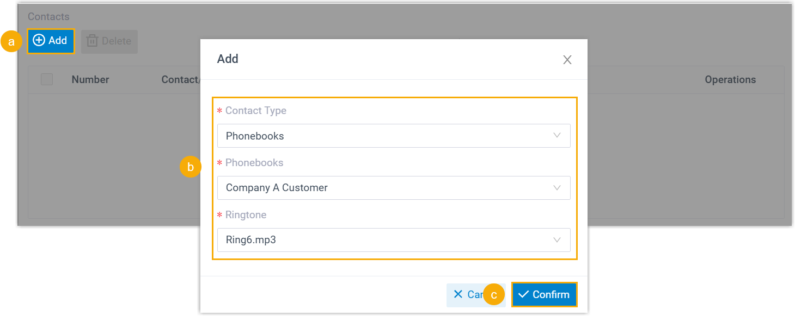
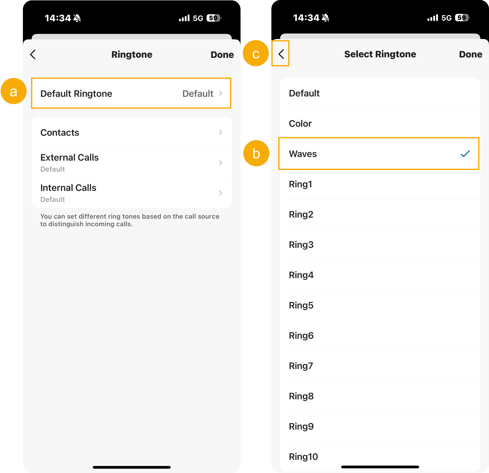
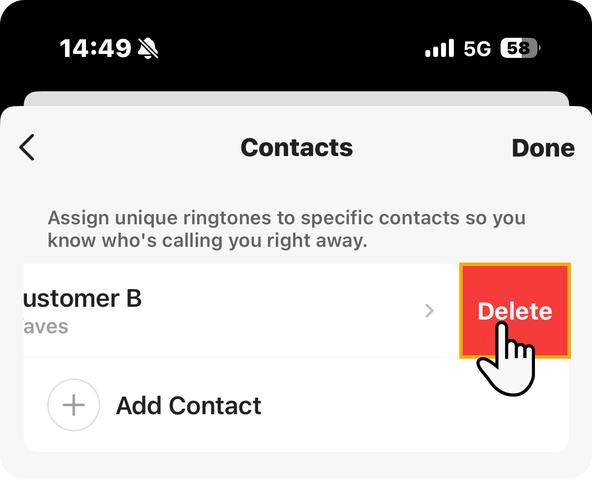
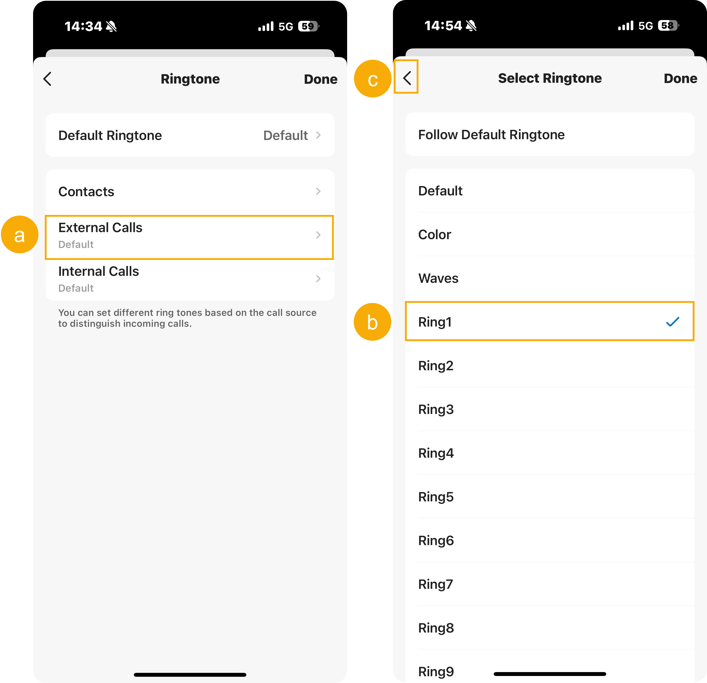
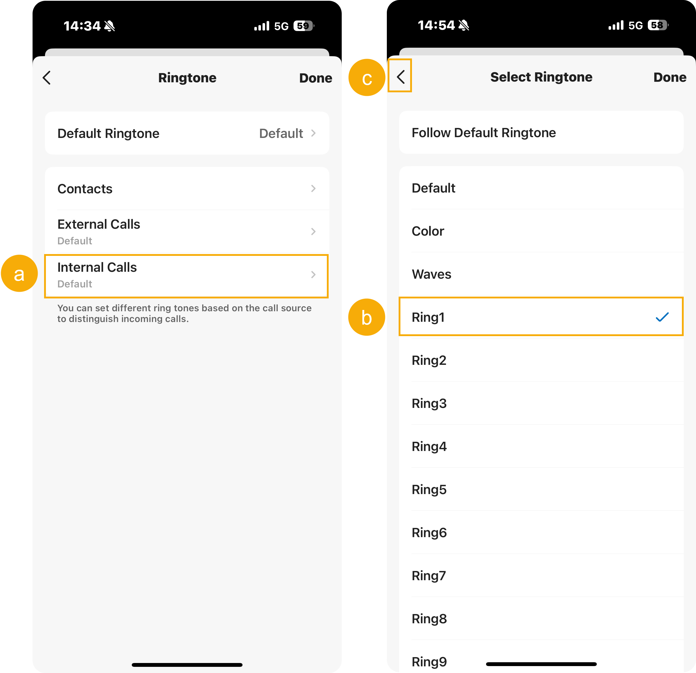

Configure Ringtones for Linkus UC Clients
Linkus allows you to customize incoming call ringtones individually on the Web Client, Desktop Client, and Mobile Client. You can set a default ringtone for all incoming calls, or assign distinctive ringtones based on different call sources, making it easy to distinguish between calls from colleagues, customers, or specific contacts.
Background information
You can customize ringtones for incoming calls directly within each Linkus UC Client. Ringtone settings are managed independently on each Linkus client and are NOT synchronized across clients.
In addition to the ringtone settings on Linkus clients, system administrator can also configure a Linkus Client Distinctive Ringtone for specific call scenarios, including ring group, queue, or IVR. These PBX-assigned ringtones will be applied to Linkus when the users are members of a ring group or queue, or are set as IVR destinations.
If multiple ringtone rules are applied at the same tine, the following priority is used: .
Requirements
- PBX Server
- The firmware of PBX Server is x.20.0.x or later.
- Linkus Mobile Client
- The version of your Linkus Mobile Client should meet the following
requirements:
- Linkus iOS: Version 5.17.x or later.
- Linkus Android: Version 5.17.x or later.
Configure ringtone for Linkus Web/Desktop Client
- Log in to Linkus Web Client or Desktop Client, go to .
- Select the checkbox of Play Ringtone.
When enabled, Linkus will play a ringtone upon receiving incoming calls. Otherwise, incoming calls will be muted.
- In the Default Ringtone drop-down list, select the
default ringtone for incoming calls.
This ringtone will be used for all incoming calls unless a distinctive ringtone is set for them.
- In the Distinctive Ringtone Settings section,
configure distinctive ringtones based on different call sources as needed.
Call Source Instruction Contacts or Phonebooks Note:- You can configure up to 10 distinctive ringtones for specific contacts or phonebooks.
- Personal contacts are prioritized over company contacts and phonebooks, while the priority of company contacts and phonebooks is based on their position in the rule list, from top to bottom.

- Click Add.
- Configure the ringtone setting as follows:
- Contact Type: Choose whether to apply the ringtone to an individual contact or a group of contacts.
- Contacts / Phonebooks: Select the specific contact (either company or personal) or the phonebook containing the desired contacts.
- Ringtone: Select or upload a ringtone you want to assign.
- Click Save.
Incoming calls from the specified contacts or phonebooks will use the custom ringtone you set.
Internal Calls - In the Internal Calls
drop-down list, select or upload a ringtone for
internal calls.
Incoming calls from internal extensions will use the selected ringtone.
External Calls - In the External Calls
drop-down list, select a ringtone for external
calls.
Incoming calls from external numbers will use the selected ringtone.
-
Click Save.
Configure ringtone for Linkus Mobile Client
- On Linkus Mobile Client, tap your account.
- Turn on the switch of Play Ringtone.
When enabled, Linkus will play a ringtone upon receiving incoming calls. Otherwise, incoming calls will be muted.
- Go to , configure ringtone for your Linkus Mobile Client.
- To set a default ringtone, do as follows:Note:
- You can tap the ringtone to preview it.
- If you select Default, Linkus will use your phone's system ringtone for incoming calls.

- Tap Default Ringtone.
- In the ringtone list, select the desired ringtone.
The ringtone will be used for all incoming calls unless a distinctive ringtone is set for them.
- To proceed with ringtone setting, tap at the top-left corner to return to previous page.
- To set distinctive ringtones based on different call sources, do as follows:
Call Source Instruction Contacts or Phonebooks Note:- You can configure up to 10 distinctive ringtones for specific contacts or phonebooks.
- Personal contacts are prioritized over company contacts and phonebooks, while the priority of company contacts and phonebooks is based on their position in the rule list, from top to bottom.

- Tap Contacts.
- In the Contacts page, tap Add Contact to add a distinctive ringtone rule.
- Tap the Contacts or Phonebooks tab, then select the specific contact (either company or personal) or the phonebook containing the desired contacts.
- In the Select Ringtone
page, select a ringtone you want to
assign.
Incoming calls from the specified contacts or phonebooks will play the custom ringtone you set.
Note:- If you select Default, Linkus will use your phone's system ringtone for incoming calls.
- If you use Linkus Android Client, you can tap Custom to select a ringtone from your phone.
- Return to the Contacts
page, and repeat step b - e to add
more rules.Tip: To delete an assigned rule, swipe left on the rule, then tap Delete.

External Calls 
- Tap External Calls.
- In the ringtone list, tap the desired
ringtone.
Incoming calls from external numbers will use the selected ringtone.
- At the top-left corner, tap to return to previous page.
Internal Calls 
- Tap Internal Calls.
- In the ringtone list, tap the desired
ringtone.
Incoming calls from internal extensions will use the selected ringtone.
- At the top-left corner, tap to return to previous page.
- At the top-right corner, tap Done to complete the ringtone setting.